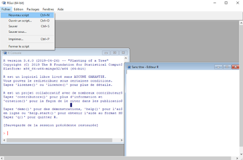
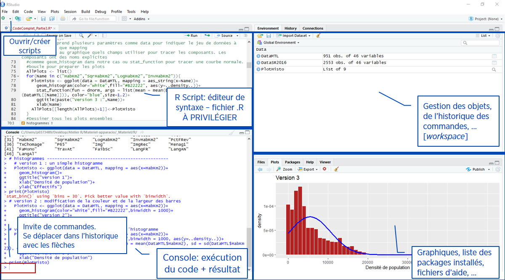
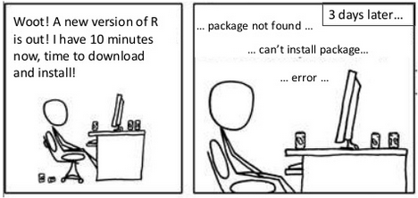
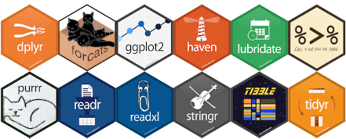
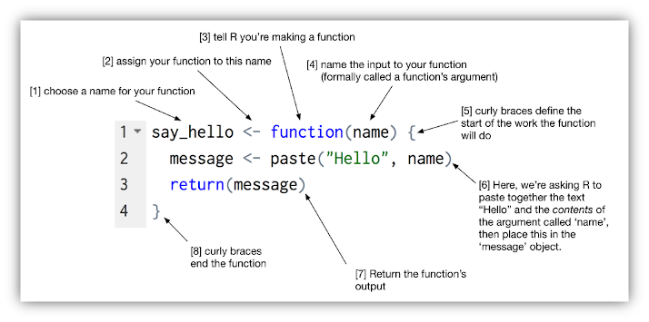

Caroline Patenaude
Bibliothécaire - Bibliothèque des lettres et sciences humaines
25 octobre 2020
Objectifs
Maitriser la grammaire de base du langage R.
Comprendre le fonctionnement et l’utilisation de fonctions de base et de leurs arguments.
Définir et manipuler différents types d’objets avec des opérateurs.
Importer et manipuler un jeu de données.
Explorer certaines fonctions de statistiques descriptives, d’analyse et de graphiques de base.
1. Pourquoi R?
- Langage et interface de programmation libres et gratuits pour l’analyse statistique et graphique (etc.).
- Multiplateforme : Windows, Mac, Linux.
- Très fort pour les graphiques et visualisations de toutes sortes.
- Communauté très active donc développement constant = rapidité de l’implémentation de nouvelles méthodes (non disponibles dans les logiciels commerciaux).
- Pour tous les types d’analyses (modèles linéaires, multi-niveaux, analyses factorielles, équation structurelle, simulations, psychométrie, économétrie, génomique…).
- Utilisation de scripts assure la reproductibilité des analyses.
- Très efficace pour la création de présentations et de rapports (
Rmarkdown, knitr, LaTeX)
- Excellente intégration avec de nombreux systèmes de bases de données, autres langages et outils comme Colab ou Jupyter notebook (en association avec Python).
2. Quelques bémols
- Plus un langage de programmation qu’un logiciel.
- Ne manipule pas directement les données comme SPSS ou excel, les fichiers de données sont des objets en mémoire.
- L’affichage des résultats est assez minimaliste.
- Prolifération des fonctions (packages) peut alourdir l’apprentissage.
- Développement rapide fait que la documentation laisse parfois à désirer.
- Contient généralement de l’aide pour toutes les fonctions mais pas toujours facile à comprendre.
- Comme pour tout language de programmation, un “rien” peut faire en sorte que le code plante.
3. R, RStudio et autres interfaces…
- Interface du R de base pas très intuitive donc peu utilisée telle quelle.

R
- Installe généralement en plus un IDE, Integrated Development Environment, comme RStudio : éditeur de script - environnement beaucoup plus convivial qui facilite le travail (gestion des fichiers, objets et commandes, historique de fonctions, autocomplétion, création de “projets”
- Sans aucune installation nécessaire, Colab fonctionne un peu comme un IDE en ligne, dans lequel on peut utiliser le langage R comme dans R ou RStudio.

RStudio
4. Installation
Télécharger et installer R de base - choisir son système d’exploitation et suivre les étapes.
Télécharger et installer RStudio (ou autre interface) – Choisir la version gratuite et son système d’exploitation - des interfaces graphiques sont aussi disponibles, mais peu recommandées (R Commander, BlueSky Statistics )
Télécharger et installer (“charger”) des packages dans RStudio.
Avantage de travailler dans Colab!

xkcd
5. Qu’est-ce qu’un package?
- Un package est un module (ou extension, librairie, bibliothèque) qui contient un ensemble de fonctions (souvent liées à une méthode ou un domaine particulier).
- À l’installation, R vient avec un ensemble de fonctions de base {base} et de modules par défaut (built in packages).
- Des packages composés de fonctions spécialisées sont constamment développés par la communauté.
- On en trouve plus de 15 000 sur le site officiel de R CRAN. D’autres se trouvent aussi ailleurs (Github, …).
- Les packages doivent être téléchargés(
install.packages()) une seule fois, mais chargés (library() ou require()) à chaque session.
- Plusieurs fonctions du même nom peuvent se retrouver dans différents packages. Il faut alors désambiguïser le nom de la fonction voulue (permet également d’utiliser de façon spontanée les fonctions de modules non chargés) :
- psych::describe()
- Hmisc::describe()
- Dans Colab, tous les packages sont téléchargés dans l’environnement d’exécution sur le nuage, c’est pourquoi il faut les télécharger à chaque exécution (code généralement contenu la première cellule de notre fichier)
Les modules sont généralement évalués par les pairs - Journal of Statistical Software – le choix doit se faire avec précautions.
Comment les trouver et les choisir? En cherchant sur Google! En s’informant dans son domaine et en vérifiant si les packages ont déjà été utilisés dans des publications.
Des fonctions effectuant les mêmes “tâches” prédéfinies (ex: corrélation, tableaux contingences…) peuvent se retrouver dans plusieurs packages avec variantes plus ou moins importantes (procédures, options, arguments, résultats).
Il y a toujours plusieurs façons d’arriver au même résultat -> normal et nécessaire de se limiter à certaines fonctions.
Certains packages ont des façons spécifiques de fonctionner. Ils utilisent une syntaxe et des formats qui se distinguent de la syntaxe commune de R.
6. Tidyverse

Packages Tidyverse
- Ensemble de packages très utilisé spécialisé dans l’analyse, la manipulation et la visualisation de données -> repose sur le principe de tidy data.
- Les packages Tidyverse partagent une syntaxe commune et des “verbes” et opérateurs spécifiques (ex: %>%).
- Travaillent avec un format de jeu de données particulier (tibble) – variation sur le dataframe.
- La commande
install.packages("tidyverse") va télécharger toutes les extensions constituants le cœur de tidyverse. La fonction library(tidyverse) les chargera (Certains autres modules doivent être chargés individuellement) :
- dplyr (manipulation des données)
- tidyr (remise en forme des données)
- purrr (programmation)
- readr (importation de données)
- tibble (tableaux de données)
- forcats (variables qualitatives)
- stringr (chaînes de caractères)
- ggplot2 (visualisation)
- Voir R for data science de Grolemund & Wickham
7. R: Langage de programmation
- R est avant tout un langage de programmation orienté objet.
- Développé à partir du langage S par Ross Ihaka et Robert Gentleman au cours des années ‘90.
- Permet de programmer ses propres fonctions et packages.
- Mais il n’est pas essentiel d’apprendre la “programmation” (vu la multitude de fonctions d’emblée disponibles)

Particularités à savoir:
- Sensible à la casse (attention minuscules/majuscules).
- Sensible aux accents (éviter d’utiliser).
- Sensible aux signes de ponctuation: point pour décimales, virgule pour adressage.
- Non sensible aux espaces.
- Attention aux guillemets (pour texte, simple ou double), crochets, accolades, parenthèses.
- Une ligne par commande, ou séparer plusieurs commandes par ;.
- Importance fondamentale de documenter son code avec #
# ceci est un commentaire (peut ajouter section en suivant avec au moins 4 ----)
- À noter que dans Collab, on peut créer des commentaires avec un # à l’intérieur d’une cellule de code ou utiliser des cellules de texte.
- Contrairement aux autres logiciels, l’analyse se fait par une série d’étapes avec des résultats intermédiaires stockés dans des objets.
LS0tDQp0aXRsZTogIkNhcHN1bGUgMTogUXUnZXN0LWNlIHF1ZSBSPyINCm91dHB1dDogDQogIGh0bWxfZG9jdW1lbnQ6IA0KICAgIHRoZW1lOiBjZXJ1bGVhbg0KICAgIGhpZ2hsaWdodDogaGFkZG9jaw0KICAgIHRvYzogdHJ1ZQ0KICAgIHRvY19mbG9hdDogDQogICAgICBjb2xsYXBzZWQ6IHRydWUNCiAgICAgIFNtb290aF9zY3JvbGw6IHRydWUNCiAgICB0b2NfZGVwdGg6IDMNCiAgICBjb2RlX2Rvd25sb2FkOiB0cnVlDQotLS0NCg0KQ2Fyb2xpbmUgUGF0ZW5hdWRlIDxicj4gDQoqW0JpYmxpb3Row6ljYWlyZSAtIEJpYmxpb3Row6hxdWUgZGVzIGxldHRyZXMgZXQgc2NpZW5jZXMgaHVtYWluZXNdKGh0dHBzOi8vYmliLnVtb250cmVhbC5jYS9ndWlkZXMvZG9ubmVlcy1zdGF0aXN0aXF1ZXMtZ2Vvc3BhdGlhbGVzL2Rvbm5lZXMtc3RhdGlzdGlxdWVzKSogPGJyPiANCjI1IG9jdG9icmUgMjAyMA0KDQo8YnI+DQoNCmBgYHtyIHNldHVwLCBpbmNsdWRlPUZBTFNFfQ0Ka25pdHI6Om9wdHNfY2h1bmskc2V0KGVjaG8gPSBGQUxTRSkNCmBgYA0KDQoNCiMjIE9iamVjdGlmcw0KDQotIE1haXRyaXNlciBsYSBncmFtbWFpcmUgZGUgYmFzZSBkdSBsYW5nYWdlIFIuDQoNCg0KLSBDb21wcmVuZHJlIGxlIGZvbmN0aW9ubmVtZW50IGV0IGwndXRpbGlzYXRpb24gZGUgZm9uY3Rpb25zIGRlIGJhc2UgZXQgZGUgbGV1cnMgYXJndW1lbnRzLg0KDQoNCi0gRMOpZmluaXIgZXQgbWFuaXB1bGVyIGRpZmbDqXJlbnRzIHR5cGVzIGQnb2JqZXRzIGF2ZWMgZGVzIG9ww6lyYXRldXJzLg0KDQoNCi0gSW1wb3J0ZXIgZXQgbWFuaXB1bGVyIHVuIGpldSBkZSBkb25uw6llcy4NCg0KDQotIEV4cGxvcmVyIGNlcnRhaW5lcyBmb25jdGlvbnMgZGUgc3RhdGlzdGlxdWVzIGRlc2NyaXB0aXZlcywgZCdhbmFseXNlIGV0IGRlIGdyYXBoaXF1ZXMgZGUgYmFzZS4NCg0KPGJyPg0KDQojIyBDb250ZW51IGRlcyBjYXBzdWxlcyBkZSBmb3JtYXRpb24NCg0KDQotICoqUHJlbWnDqHJlIGNhcHN1bGUqKjogRW50csOpZSBlbiBtYXRpw6hyZSAtIFF1J2VzdC1jZSBxdWUgUj8gDQotICoqQ2Fwc3VsZSBkZXV4Kio6IEludHJvZHVjdGlvbiBhdSBsYW5nYWdlIFIgKG9iamV0cywgZm9uY3Rpb25zIGV0IGFyZ3VtZW50cykNCi0gKipDYXBzdWxlIHRyb2lzKio6IEltcG9ydGF0aW9uIGV0IGV4cGxvcmF0aW9uIGQndW4gdGFibGVhdSBkZSBkb25uw6llcw0KLSAqKkNhcHN1bGUgcXVhdHJlKio6IEwnaW5kZXhhdGlvbiAoc8OpbGVjdGlvbiBkZSB2YXJpYWJsZXMgZXQgY3LDqWF0aW9uIGRlIHNvdXMtZ3JvdXBlcykNCi0gKipDYXBzdWxlIGNpbnEqKjogTGEgbWFuaXB1bGF0aW9uIGRlIHZhcmlhYmxlcyBxdWFsaXRhdGl2ZXMgZXQgcXVhbnRpdGF0aXZlcyAocmVub21tZXIsIHJlY29kZXIuLi4pDQotICoqQ2Fwc3VsZSBzaXgqKjogTGVzIHN0YXRpc3RpcXVlcyBkZXNjcmlwdGl2ZXMNCi0gKipDYXBzdWxlIHNlcHQqKjogTGVzIHRlc3RzIHN0YXRpc3RpcXVlcyBkZSBiYXNlDQotICoqQ2Fwc3VsZSBodWl0Kio6IExlcyBncmFwaGlxdWVzIHVuaXZhcmnDqXMgZXQgYml2YXJpw6lzDQoNCjxicj4NCg0KIyMgMS4gUG91cnF1b2kgKipSKio/IA0KDQoNCi0gTGFuZ2FnZSBldCBpbnRlcmZhY2UgZGUgcHJvZ3JhbW1hdGlvbiBsaWJyZXMgZXQgZ3JhdHVpdHMgcG91ciBs4oCZYW5hbHlzZSBzdGF0aXN0aXF1ZSBldCBncmFwaGlxdWUgKGV0Yy4pLg0KLSBNdWx0aXBsYXRlZm9ybWUgOiBXaW5kb3dzLCBNYWMsIExpbnV4Lg0KLSBUcsOocyBmb3J0IHBvdXIgbGVzIGdyYXBoaXF1ZXMgZXQgdmlzdWFsaXNhdGlvbnMgZGUgdG91dGVzIHNvcnRlcy4NCi0gQ29tbXVuYXV0w6kgdHLDqHMgYWN0aXZlIGRvbmMgZMOpdmVsb3BwZW1lbnQgY29uc3RhbnQgPSByYXBpZGl0w6kgZGUgbOKAmWltcGzDqW1lbnRhdGlvbiBkZSBub3V2ZWxsZXMgbcOpdGhvZGVzIChub24gZGlzcG9uaWJsZXMgZGFucyBsZXMgbG9naWNpZWxzIGNvbW1lcmNpYXV4KS4NCi0gUG91ciB0b3VzIGxlcyB0eXBlcyBk4oCZYW5hbHlzZXMgKG1vZMOobGVzIGxpbsOpYWlyZXMsIG11bHRpLW5pdmVhdXgsIGFuYWx5c2VzIGZhY3RvcmllbGxlcywgw6lxdWF0aW9uIHN0cnVjdHVyZWxsZSwgc2ltdWxhdGlvbnMsIHBzeWNob23DqXRyaWUsIMOpY29ub23DqXRyaWUsIGfDqW5vbWlxdWUuLi4pLg0KLSBVdGlsaXNhdGlvbiBkZSBzY3JpcHRzIGFzc3VyZSBsYSByZXByb2R1Y3RpYmlsaXTDqSBkZXMgYW5hbHlzZXMuDQotIFRyw6hzIGVmZmljYWNlIHBvdXIgbGEgY3LDqWF0aW9uIGRlIHByw6lzZW50YXRpb25zIGV0IGRlIHJhcHBvcnRzIChgUm1hcmtkb3duYCwgYGtuaXRyYCwgYExhVGVYYCkNCi0gRXhjZWxsZW50ZSBpbnTDqWdyYXRpb24gYXZlYyBkZSBub21icmV1eCBzeXN0w6htZXMgZGUgYmFzZXMgZGUgZG9ubsOpZXMsICBhdXRyZXMgbGFuZ2FnZXMgZXQgb3V0aWxzIGNvbW1lIENvbGFiIG91IEp1cHl0ZXIgbm90ZWJvb2sgKGVuIGFzc29jaWF0aW9uIGF2ZWMgUHl0aG9uKS4NCg0KPGJyPg0KDQojIyAyLiBRdWVscXVlcyBiw6ltb2xzICANCg0KLSBQbHVzIHVuIGxhbmdhZ2UgZGUgcHJvZ3JhbW1hdGlvbiBxdeKAmXVuIGxvZ2ljaWVsLg0KLSBOZSBtYW5pcHVsZSBwYXMgZGlyZWN0ZW1lbnQgbGVzIGRvbm7DqWVzIGNvbW1lIFNQU1Mgb3UgZXhjZWwsIGxlcyBmaWNoaWVycyBkZSBkb25uw6llcyBzb250IGRlcyAqKm9iamV0cyoqIGVuIG3DqW1vaXJlLg0KLSBM4oCZYWZmaWNoYWdlIGRlcyByw6lzdWx0YXRzIGVzdCBhc3NleiBtaW5pbWFsaXN0ZS4NCi0gUHJvbGlmw6lyYXRpb24gZGVzIGZvbmN0aW9ucyAoKnBhY2thZ2VzKikgcGV1dCBhbG91cmRpciBs4oCZYXBwcmVudGlzc2FnZS4NCi0gRMOpdmVsb3BwZW1lbnQgcmFwaWRlIGZhaXQgcXVlIGxhIGRvY3VtZW50YXRpb24gbGFpc3NlIHBhcmZvaXMgw6AgZMOpc2lyZXIuDQotIENvbnRpZW50IGfDqW7DqXJhbGVtZW50IGRlIGzigJlhaWRlIHBvdXIgdG91dGVzIGxlcyBmb25jdGlvbnMgbWFpcyBwYXMgdG91am91cnMgZmFjaWxlIMOgIGNvbXByZW5kcmUuDQotIENvbW1lIHBvdXIgdG91dCBsYW5ndWFnZSBkZSBwcm9ncmFtbWF0aW9uLCB1biAicmllbiIgcGV1dCBmYWlyZSBlbiBzb3J0ZSBxdWUgbGUgY29kZSBwbGFudGUuDQoNCjxicj4NCg0KIyMgMy4gUiwgUlN0dWRpbyBldCBhdXRyZXMgaW50ZXJmYWNlcy4uLiAgDQoNCi0gSW50ZXJmYWNlIGR1ICoqUioqIGRlIGJhc2UgcGFzIHRyw6hzIGludHVpdGl2ZSBkb25jIHBldSB1dGlsaXPDqWUgdGVsbGUgcXVlbGxlLiAgDQoNCjxjZW50ZXI+DQoNCiFbXShtYXJrZG93bi9zY3JlZW5zaG90Ui5wbmcpDQoNCltSXShodHRwczovL2NyYW4uci1wcm9qZWN0Lm9yZykgDQoNCjwvY2VudGVyPiAgDQoNCi0gSW5zdGFsbGUgZ8OpbsOpcmFsZW1lbnQgZW4gcGx1cyB1biBJREUsICAqSW50ZWdyYXRlZCBEZXZlbG9wbWVudCBFbnZpcm9ubWVudCosIGNvbW1lIFsqKlJTdHVkaW8qKl0oaHR0cHM6Ly93d3cucnN0dWRpby5jb20vcHJvZHVjdHMvcnN0dWRpby9kb3dubG9hZC8jZG93bmxvYWQpIDogIMOpZGl0ZXVyIGRlIHNjcmlwdCAtIGVudmlyb25uZW1lbnQgYmVhdWNvdXAgcGx1cyBjb252aXZpYWwgcXVpIGZhY2lsaXRlIGxlIHRyYXZhaWwgKGdlc3Rpb24gZGVzIGZpY2hpZXJzLCBvYmpldHMgZXQgY29tbWFuZGVzLCBoaXN0b3JpcXVlIGRlIGZvbmN0aW9ucywgYXV0b2NvbXBsw6l0aW9uLCBjcsOpYXRpb24gZGUgWyJwcm9qZXRzIl0oaHR0cHM6Ly9zdXBwb3J0LnJzdHVkaW8uY29tL2hjL2VuLXVzL2FydGljbGVzLzIwMDUyNjIwNy1Vc2luZy1Qcm9qZWN0cykNCi0gKipTYW5zIGF1Y3VuZSBpbnN0YWxsYXRpb24gbsOpY2Vzc2FpcmUsIENvbGFiIGZvbmN0aW9ubmUgdW4gcGV1IGNvbW1lIHVuIElERSBlbiBsaWduZSwgZGFucyBsZXF1ZWwgb24gcGV1dCB1dGlsaXNlciBsZSBsYW5nYWdlIFIgY29tbWUgZGFucyBSIG91IFJTdHVkaW8qKi4NCg0KPGJyPg0KDQo8Y2VudGVyPg0KDQohW10obWFya2Rvd24vaW50ZXJmYWNlLmpwZyl7d2lkdGg9ODAlfQ0KDQpbUlN0dWRpb10oaHR0cHM6Ly9yc3R1ZGlvLmNvbS8pIA0KDQo8L2NlbnRlcj4gIA0KDQojIyA0LiBJbnN0YWxsYXRpb24gIA0KDQoxLiBUw6lsw6ljaGFyZ2VyIGV0IGluc3RhbGxlciBbKipSIGRlIGJhc2UqKl0oaHR0cHM6Ly9jcmFuLnItcHJvamVjdC5vcmcvKSAtIGNob2lzaXIgc29uIHN5c3TDqG1lIGTigJlleHBsb2l0YXRpb24gZXQgc3VpdnJlIGxlcyDDqXRhcGVzLg0KDQoyLiBUw6lsw6ljaGFyZ2VyIGV0IGluc3RhbGxlciAgWyoqUlN0dWRpbyoqXShodHRwczovL3d3dy5yc3R1ZGlvLmNvbS9wcm9kdWN0cy9yc3R1ZGlvL2Rvd25sb2FkLyNkb3dubG9hZCkgKG91IGF1dHJlIGludGVyZmFjZSkg4oCTIENob2lzaXIgbGEgdmVyc2lvbiBncmF0dWl0ZSBldCBzb24gc3lzdMOobWUgZOKAmWV4cGxvaXRhdGlvbiAtIGRlcyBpbnRlcmZhY2VzIGdyYXBoaXF1ZXMgc29udCBhdXNzaSBkaXNwb25pYmxlcywgbWFpcyBwZXUgcmVjb21tYW5kw6llcyAoW1IgQ29tbWFuZGVyXShodHRwczovL3d3dy5yY29tbWFuZGVyLmNvbS8pLCBbQmx1ZVNreSBTdGF0aXN0aWNzXShodHRwczovL3d3dy5ibHVlc2t5c3RhdGlzdGljcy5jb20vKSApDQoNCjMuIFTDqWzDqWNoYXJnZXIgZXQgaW5zdGFsbGVyICgiY2hhcmdlciIpIGRlcyAqcGFja2FnZXMqIGRhbnMgKipSU3R1ZGlvKiouDQoNCjxicj4gICANCg0KIyMjIEF2YW50YWdlIGRlIHRyYXZhaWxsZXIgZGFucyBDb2xhYiEgIA0KDQohW10obWFya2Rvd24veGtjZF9wYWNrYWdlLnBuZyl7d2lkdGg9NjAlfQ0KDQpbeGtjZF0oaHR0cHM6Ly94a2NkLmNvbS8pIA0KDQo8L2NlbnRlcj4gIA0KDQo8YnI+ICAgDQoNCiMjIDUuIFF14oCZZXN0LWNlIHF14oCZdW4gKnBhY2thZ2UqPyANCg0KPGJyPg0KDQotIFVuICpwYWNrYWdlKiBlc3QgdW4gbW9kdWxlIChvdSBleHRlbnNpb24sIGxpYnJhaXJpZSwgYmlibGlvdGjDqHF1ZSkgcXVpIGNvbnRpZW50IHVuIGVuc2VtYmxlIGRlIGZvbmN0aW9ucyAoc291dmVudCBsacOpZXMgw6AgdW5lIG3DqXRob2RlIG91IHVuIGRvbWFpbmUgcGFydGljdWxpZXIpLg0KLSDDgCBs4oCZaW5zdGFsbGF0aW9uLCAqKlIqKiB2aWVudCBhdmVjIHVuIGVuc2VtYmxlIGRlIGZvbmN0aW9ucyBkZSBiYXNlIHtiYXNlfSBldCBkZSBtb2R1bGVzIHBhciBkw6lmYXV0ICgqYnVpbHQgaW4gcGFja2FnZXMqKS4NCi0gRGVzICpwYWNrYWdlcyogY29tcG9zw6lzIGRlIGZvbmN0aW9ucyBzcMOpY2lhbGlzw6llcyBzb250IGNvbnN0YW1tZW50IGTDqXZlbG9wcMOpcyBwYXIgbGEgY29tbXVuYXV0w6kuDQotIE9uIGVuIHRyb3V2ZSBwbHVzIGRlIDE1IDAwMCBzdXIgbGUgc2l0ZSBvZmZpY2llbCBkZSAqKlIqKiBbQ1JBTl0oaHR0cHM6Ly9jcmFuLnItcHJvamVjdC5vcmcvd2ViL3BhY2thZ2VzLykuIEQnYXV0cmVzIHNlIHRyb3V2ZW50IGF1c3NpIGFpbGxldXJzIChHaXRodWIsIOKApikuDQotIExlcyBwYWNrYWdlcyBkb2l2ZW50IMOqdHJlICoqdMOpbMOpY2hhcmfDqXMqKihgaW5zdGFsbC5wYWNrYWdlcygpYCkgdW5lIHNldWxlIGZvaXMsIG1haXMgKipjaGFyZ8OpcyoqIChgbGlicmFyeSgpYCBvdSBgcmVxdWlyZSgpYCkgw6AgY2hhcXVlIHNlc3Npb24uDQotIFBsdXNpZXVycyBmb25jdGlvbnMgZHUgbcOqbWUgbm9tIHBldXZlbnQgc2UgcmV0cm91dmVyIGRhbnMgZGlmZsOpcmVudHMgcGFja2FnZXMuIElsIGZhdXQgYWxvcnMgZMOpc2FtYmlndcOvc2VyIGxlIG5vbSBkZSBsYSBmb25jdGlvbiB2b3VsdWUgKHBlcm1ldCDDqWdhbGVtZW50IGQndXRpbGlzZXIgZGUgZmHDp29uIHNwb250YW7DqWUgbGVzIGZvbmN0aW9ucyBkZSBtb2R1bGVzIG5vbiBjaGFyZ8OpcykgOg0KICAtIHBzeWNoOjpkZXNjcmliZSgpDQogIC0gSG1pc2M6OmRlc2NyaWJlKCkNCg0KLSAqKkRhbnMgQ29sYWIsIHRvdXMgbGVzIHBhY2thZ2VzIHNvbnQgdMOpbMOpY2hhcmfDqXMgZGFucyBsJ2Vudmlyb25uZW1lbnQgZCdleMOpY3V0aW9uIHN1ciBsZSBudWFnZSwgYydlc3QgcG91cnF1b2kgaWwgZmF1dCBsZXMgdMOpbMOpY2hhcmdlciDDoCBjaGFxdWUgZXjDqWN1dGlvbiAoY29kZSBnw6luw6lyYWxlbWVudCBjb250ZW51IGxhIHByZW1pw6hyZSBjZWxsdWxlIGRlIG5vdHJlIGZpY2hpZXIpKioNCiAgICANCjxicj4gIA0KDQotIExlcyBtb2R1bGVzIHNvbnQgZ8OpbsOpcmFsZW1lbnQgw6l2YWx1w6lzIHBhciBsZXMgcGFpcnMgLSBbSm91cm5hbCBvZiBTdGF0aXN0aWNhbCBTb2Z0d2FyZV0oaHR0cHM6Ly93d3cuanN0YXRzb2Z0Lm9yZy9pbmRleCkg4oCTIGxlIGNob2l4IGRvaXQgc2UgZmFpcmUgYXZlYyBwcsOpY2F1dGlvbnMuDQoNCi0gQ29tbWVudCBsZXMgdHJvdXZlciBldCBsZXMgY2hvaXNpcj8gRW4gY2hlcmNoYW50IHN1ciBHb29nbGUhIEVuIHPigJlpbmZvcm1hbnQgZGFucyBzb24gZG9tYWluZSBldCBlbiB2w6lyaWZpYW50IHNpIGxlcyBwYWNrYWdlcyBvbnQgZMOpasOgIMOpdMOpIHV0aWxpc8OpcyBkYW5zIGRlcyBwdWJsaWNhdGlvbnMuDQoNCi0gRGVzIGZvbmN0aW9ucyBlZmZlY3R1YW50IGxlcyBtw6ptZXMgInTDomNoZXMiIHByw6lkw6lmaW5pZXMgKGV4OiBjb3Jyw6lsYXRpb24sIHRhYmxlYXV4IGNvbnRpbmdlbmNlc+KApikgcGV1dmVudCBzZSByZXRyb3V2ZXIgZGFucyBwbHVzaWV1cnMgcGFja2FnZXMgYXZlYyB2YXJpYW50ZXMgcGx1cyBvdSBtb2lucyBpbXBvcnRhbnRlcyAocHJvY8OpZHVyZXMsIG9wdGlvbnMsIGFyZ3VtZW50cywgcsOpc3VsdGF0cykuDQoNCi0gSWwgeSBhIHRvdWpvdXJzIHBsdXNpZXVycyBmYcOnb25zIGTigJlhcnJpdmVyIGF1IG3Dqm1lIHLDqXN1bHRhdCAtPiBub3JtYWwgZXQgbsOpY2Vzc2FpcmUgZGUgc2UgbGltaXRlciDDoCBjZXJ0YWluZXMgZm9uY3Rpb25zLg0KDQotIENlcnRhaW5zIHBhY2thZ2VzIG9udCBkZXMgZmHDp29ucyBzcMOpY2lmaXF1ZXMgZGUgZm9uY3Rpb25uZXIuIElscyB1dGlsaXNlbnQgdW5lIHN5bnRheGUgZXQgZGVzIGZvcm1hdHMgcXVpIHNlIGRpc3Rpbmd1ZW50IGRlIGxhIHN5bnRheGUgY29tbXVuZSBkZSAqKlIqKi4gDQoNCg0KPGJyPg0KDQojIyA2LiBUaWR5dmVyc2Ugey5zbWFsbGVyfQ0KDQogPGNlbnRlcj4NCg0KIVtdKG1hcmtkb3duL3RpZHl2ZXJzZS5wbmcpe3dpZHRoPTYwJX0NCg0KW1BhY2thZ2VzIFRpZHl2ZXJzZV0oaHR0cHM6Ly93d3cudGlkeXZlcnNlLm9yZy9wYWNrYWdlcy8pIA0KDQoNCjwvY2VudGVyPiAgDQoNCi0gRW5zZW1ibGUgZGUgcGFja2FnZXMgdHLDqHMgdXRpbGlzw6kgc3DDqWNpYWxpc8OpIGRhbnMgbOKAmWFuYWx5c2UsIGxhIG1hbmlwdWxhdGlvbiBldCBsYSB2aXN1YWxpc2F0aW9uIGRlIGRvbm7DqWVzIC0+IHJlcG9zZSBzdXIgbGUgcHJpbmNpcGUgZGUgIFsqdGlkeSBkYXRhKl0oaHR0cHM6Ly93d3cuanN0YXRzb2Z0Lm9yZy9hcnRpY2xlL3ZpZXcvdjA1OWkxMCkuDQotIExlcyBwYWNrYWdlcyBUaWR5dmVyc2UgcGFydGFnZW50IHVuZSBzeW50YXhlIGNvbW11bmUgZXQgZGVzICJ2ZXJiZXMiIGV0IG9ww6lyYXRldXJzIHNww6ljaWZpcXVlcyAoZXg6ICU+JSkuIA0KLSBUcmF2YWlsbGVudCBhdmVjIHVuIGZvcm1hdCBkZSBqZXUgZGUgZG9ubsOpZXMgcGFydGljdWxpZXIgKCp0aWJibGUqKSDigJMgdmFyaWF0aW9uIHN1ciBsZSBkYXRhZnJhbWUuDQotIExhIGNvbW1hbmRlIGBpbnN0YWxsLnBhY2thZ2VzKCJ0aWR5dmVyc2UiKWAgdmEgdMOpbMOpY2hhcmdlciB0b3V0ZXMgbGVzIGV4dGVuc2lvbnMgY29uc3RpdHVhbnRzIGxlIGPFk3VyIGRlIHRpZHl2ZXJzZS4gTGEgZm9uY3Rpb24gbGlicmFyeSh0aWR5dmVyc2UpIGxlcyBjaGFyZ2VyYSAoQ2VydGFpbnMgYXV0cmVzIG1vZHVsZXMgZG9pdmVudCDDqnRyZSBjaGFyZ8OpcyBpbmRpdmlkdWVsbGVtZW50KSA6DQogICAgKyBkcGx5ciAobWFuaXB1bGF0aW9uIGRlcyBkb25uw6llcykNCiAgICArIHRpZHlyIChyZW1pc2UgZW4gZm9ybWUgZGVzIGRvbm7DqWVzKQ0KICAgICsgcHVycnIgKHByb2dyYW1tYXRpb24pDQogICAgKyByZWFkciAoaW1wb3J0YXRpb24gZGUgZG9ubsOpZXMpDQogICAgKyB0aWJibGUgKHRhYmxlYXV4IGRlIGRvbm7DqWVzKQ0KICAgICsgZm9yY2F0cyAodmFyaWFibGVzIHF1YWxpdGF0aXZlcykNCiAgICArIHN0cmluZ3IgKGNoYcOubmVzIGRlIGNhcmFjdMOocmVzKQ0KICAgICsgZ2dwbG90MiAodmlzdWFsaXNhdGlvbikNCg0KLSBWb2lyIFtSIGZvciBkYXRhIHNjaWVuY2VdKGh0dHBzOi8vcjRkcy5oYWQuY28ubnovaW5kZXguaHRtbCkgZGUgR3JvbGVtdW5kICYgV2lja2hhbQ0KDQoNCjxicj4NCg0KIyMgNy4gKipSKio6IExhbmdhZ2UgZGUgcHJvZ3JhbW1hdGlvbiAgDQoNCi0gKipSKiogZXN0IGF2YW50IHRvdXQgdW4gbGFuZ2FnZSBkZSBwcm9ncmFtbWF0aW9uIG9yaWVudMOpIG9iamV0Lg0KLSBEw6l2ZWxvcHDDqSDDoCBwYXJ0aXIgZHUgKipsYW5nYWdlIFMqKiBwYXIgKlJvc3MgSWhha2EqIGV0ICpSb2JlcnQgR2VudGxlbWFuKiBhdSBjb3VycyBkZXMgYW5uw6llcyDigJg5MC4NCi0gUGVybWV0IGRlIHByb2dyYW1tZXIgc2VzIHByb3ByZXMgZm9uY3Rpb25zIGV0IHBhY2thZ2VzLiAgDQotIE1haXMgaWwgbidlc3QgcGFzIGVzc2VudGllbCBkJ2FwcHJlbmRyZSBsYSAicHJvZ3JhbW1hdGlvbiIgKHZ1IGxhIG11bHRpdHVkZSBkZSBmb25jdGlvbnMgZCdlbWJsw6llIGRpc3BvbmlibGVzKQ0KDQo8Y2VudGVyPg0KDQohW10obWFya2Rvd24vcHJvZ3JhbW1hdGlvbi5wbmcpe3dpZHRoPTgwJX0NCg0KPC9jZW50ZXI+ICANCg0KDQo8YnI+DQoNCg0KKipQYXJ0aWN1bGFyaXTDqXMgw6Agc2F2b2lyKio6DQoNCi0gU2Vuc2libGUgw6AgbGEgY2Fzc2UgKGF0dGVudGlvbiBtaW51c2N1bGVzL21hanVzY3VsZXMpLg0KLSBTZW5zaWJsZSBhdXggYWNjZW50cyAow6l2aXRlciBk4oCZdXRpbGlzZXIpLg0KLSBTZW5zaWJsZSBhdXggc2lnbmVzIGRlIHBvbmN0dWF0aW9uOiBwb2ludCBwb3VyIGTDqWNpbWFsZXMsIHZpcmd1bGUgcG91ciBhZHJlc3NhZ2UuDQotIE5vbiBzZW5zaWJsZSBhdXggZXNwYWNlcy4NCi0gQXR0ZW50aW9uIGF1eCBndWlsbGVtZXRzIChwb3VyIHRleHRlLCBzaW1wbGUgb3UgZG91YmxlKSwgY3JvY2hldHMsIGFjY29sYWRlcywgcGFyZW50aMOoc2VzLg0KLSBVbmUgbGlnbmUgcGFyIGNvbW1hbmRlLCBvdSBzw6lwYXJlciBwbHVzaWV1cnMgY29tbWFuZGVzIHBhciA7Lg0KLSBJbXBvcnRhbmNlIGZvbmRhbWVudGFsZSBkZSBkb2N1bWVudGVyIHNvbiBjb2RlIGF2ZWMgICMgDQpgIyBjZWNpIGVzdCB1biBjb21tZW50YWlyZSAocGV1dCBham91dGVyIHNlY3Rpb24gZW4gc3VpdmFudCBhdmVjIGF1IG1vaW5zIDQgLS0tLSlgDQogICAgKyDDgCBub3RlciBxdWUgZGFucyBDb2xsYWIsIG9uIHBldXQgY3LDqWVyIGRlcyBjb21tZW50YWlyZXMgYXZlYyB1biAjIMOgIGzigJlpbnTDqXJpZXVyIGQndW5lIGNlbGx1bGUgZGUgY29kZSBvdSB1dGlsaXNlciBkZXMgY2VsbHVsZXMgZGUgdGV4dGUuDQotIENvbnRyYWlyZW1lbnQgYXV4IGF1dHJlcyBsb2dpY2llbHMsIGzigJlhbmFseXNlIHNlIGZhaXQgcGFyIHVuZSBzw6lyaWUgZOKAmcOpdGFwZXMgYXZlYyBkZXMgcsOpc3VsdGF0cyBpbnRlcm3DqWRpYWlyZXMgc3RvY2vDqXMgZGFucyBkZXMgb2JqZXRzLg0KDQo8YnI+DQoNCioqKg0KDQogIA==